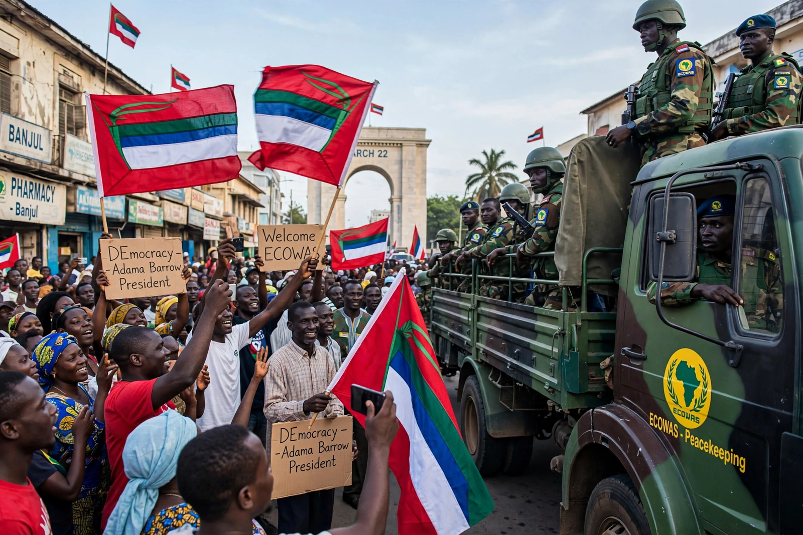

The 2016–17 Gambian constitutional crisis was a political crisis in The Gambia following the December 2016 presidential election, in which opposition candidate Adama Barrow defeated long-serving President Yahya Jammeh, who initially accepted and then rejected the result.

Yahya Jammeh had ruled since a 1994 coup. The 1 December 2016 election was contested by a coalition backing Adama Barrow. The Independent Electoral Commission declared Barrow the winner with about 43% of the vote.
Jammeh first conceded, then on 9 December announced he rejected the result, citing irregularities. He filed a petition and declared a state of emergency. The UN Security Council, African Union and ECOWAS recognised Barrow.
Barrow was inaugurated on 19 January 2017 at the Gambian embassy in Dakar, Senegal. ECOWAS forces, led by Senegal and Nigeria, entered The Gambia in Operation Restore Democracy. After negotiations led by Presidents Alpha Condé and Mohamed Ould Abdel Aziz, Jammeh left for exile in Equatorial Guinea on 21 January.
Barrow returned on 26 January, formed a transitional government, and began reforms including a Truth, Reconciliation and Reparations Commission.
See also: Banjul